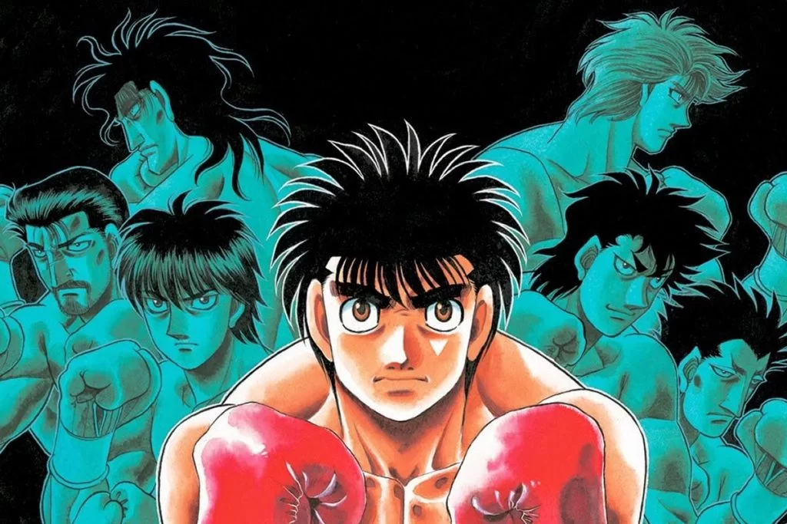

Hajime no Ippo
Hajime no Ippo, también conocido en español como Espiritu de lucha, es un manga creado en 1989 por el famoso mangaka George Morikawa. Manga el cual, no solo ha conseguido un anime, sino que tamibén todavía está en proceso.
La historia trata de un joven tímido de 17 año llamado Ippo Makunouchi, el cual es siempre molestado por los matones de su secundaria.
Un día es golpeado e insultado por los mismos matones, hasta que aparecio un hombre llamado Mamoru Takamura, el cual no solo salvó y defendió a Ippo, sino que también lo introdujo al mundo del boxeo. Y desde ahí el joven de 17 años empezaría un largo y duro camino en el mundo del boxeo.
Para que puedas saber e interesarte más por esta historia, te dejamos el primer capítulo del anime: